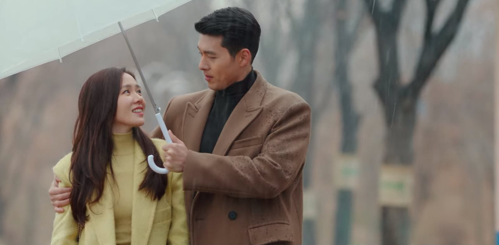

<link rel="stylesheet" href="fullbleed.css">
<link rel="stylesheet" href="https://fonts.googleapis.com/css?family=Roboto">
<main class="wrapper">
  <h1 class="center">Crash Landing on You</h1>
<p>Yoon Se-ri and Ri Jeong-Hyeok are reaching levels of love that shouldn't even be possible. The hilarity, the tension, the romance, it's so poignant I had to repeatedly take breaks from binge watching because my heart was just too full.  </p>
  
<p>I love how the characters are unapologetically, absolutely portrayed as whatever they are. From beautiful to nasty people there's such a powerful range of acting unconstrained by worries like would anyone really be this in real life. At times it goes totally crazy: the whole Switzerland thing, with people coincidentally meeting first in Switzerland before years later in South Korea, would be the most ridiculous, superfluous element to any American love story (probably, idk, don't quote me on that). But in Crash Landing they just don't stop building characters up, not into caricatures of themselves in a bad way, but just constantly, flawlessly themselves.</p>
<p>And on flawlessness, do either Seri or Captain Ri ever do anything wrong in their lives at any point ever? Because I can't think of anything. I feel like I come in expecting some sort of conflict inducing moment where one hurts the other because they're not 100% a good person, but it just never happened? Of course, the result of good people not hurting one another is that in order to build conflict, at first they can be on opposing sides (eg North vs South Korea, arranged marriage conflict, stealing money...) but eventually since they won't do anything seriously bad to one another they'll just resolve their differences, so there needs to be some other bad guy to drive the conflict. Fortunately, Cho Cheol Gang, holy shit I was so glad when he finally died.</p>
<p>Anyways, maybe having watched only Misaeng I wasn't ready to make sweeping pronouncements, but having now watched two (2) dramas I am ready to criticize the entire genre. As opposed to soap operas and romantic comedies, which sound sort of cliched and boring to me (another sweeping pronouncement, in this case without having watched any at all) Crash Landing manages to be clever and self aware about its genre while going through expected tropes in the wholehearted K-drama style. Crash Landing primarily references K-dramas through a North Korean soldier who secretly watches them (and eventually meets his idol Choi Ji Woo), which allows them to say of course the people pretending to be engaged always end up falling in love for real, but that's not happening to us here!</p>
  
<p>Obviously though the strongest result of how thoroughly they play it is the two leads falling in love. The funny thing is they spend most of their time together (tearfully) saying goodbye or sacrificing themselves for the other. I'd think of these more as effects than as causes of love. But I guess they can be causes too, as their shared ordeals bring them together. But when I try to think of the initial tangible things they do that make them fall for one another, it's interesting because even though they're both ridiculously beautiful, that's not the reason, at least explicitly.</p>
<p> One way they do demonstrate love is by sharing food and eating together (which to me is how grandparents show love so I like it). And their personalities mesh well. The thing is though, the soldiers and aunties are also emphatic in wishing health and wellbeing on the main characters in very concrete ways, so what makes the two of them special - is it just that they're both so beautiful (btw, they say "your face is my type" like what? come on, who on earth would see either of them and say nah, face not really my type)?</p>
<p>For one thing, they do constantly save each other. Their self sacrifice almost reminds me of The Gift of the Magi in that they're both solely fixated on maximizing the other's wellbeing, no matter the cost to their own. I love how he takes a bullet for her, so, not to be outdone, she takes a bullet for him (and gets even closer to death!). That seemed like it might be a K-drama thing, it'd be pretty lame if he took a bullet for her but she didn't for him too, right? But idk, maybe I haven't fully captured their love but it is what it is.</p>

<p>Lastly, the show has to deal with masculinity, femininity, and North and South Korea. I think on the whole North Korea comes off pretty well - the soldiers clearly have more comforts and luxuries available in South Korea, where there aren't frequent blackouts, but they do just fine in North Korea and probably have more abundant food and clothing than is typically realistic there. Or not, idk. And ofc they unite to cheer against Japan.</p> 

<p>Women in the show have chances to shine when it comes to fashion, family, business, maybe more, although they're never in the military, iirc. Whereas Captain Ri and to some extent his troops are perfect examples of would prefer not to use violence, but really good at violence when forced to it. But men cook noodles, coffee, clams, and cry openly, so on the whole it seems good, again idk.</p> 

<p>One interesting thing I've heard is that since becoming more prosperous, South Koreans have become worried about losing more rugged masculinity, so the secondary male lead from South Korea is much more of dandy than Captain Ri, although maybe that's a coincidence and in the end he does shoot people in a very traditionally gallant save the girl way (my pet theory is in the same way Americans were insecure about losing the pioneer spirit, so sporting culture became popular to raise young men in the US who weren't out fighting, esports shore up perceived deficits in modern masculinity, and even from the brief gaming scenes it's the male soldiers who get into fighting one another online).</p>
  
</main>
